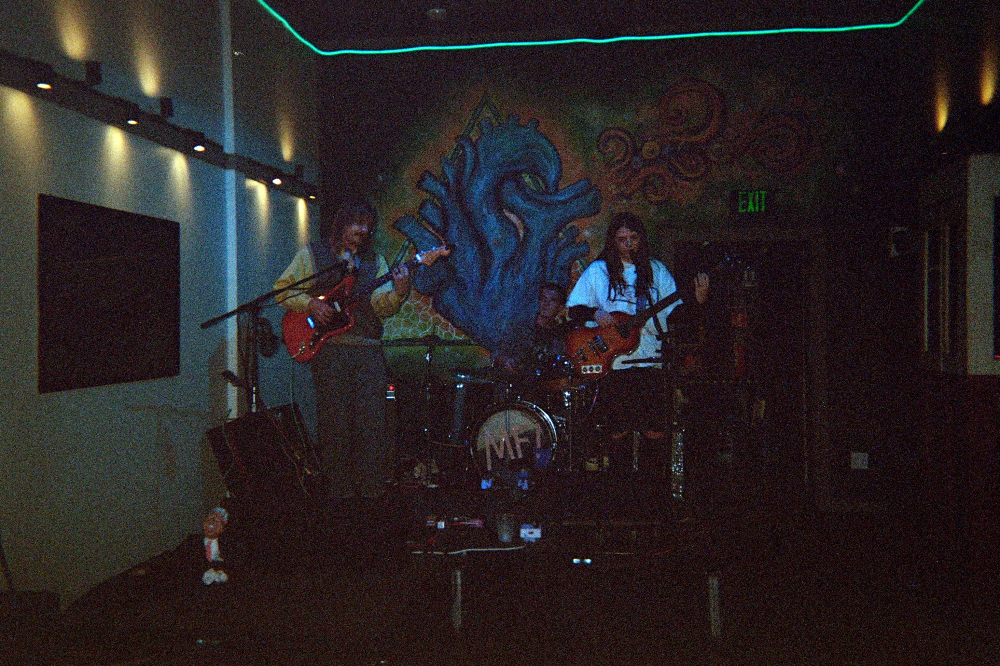
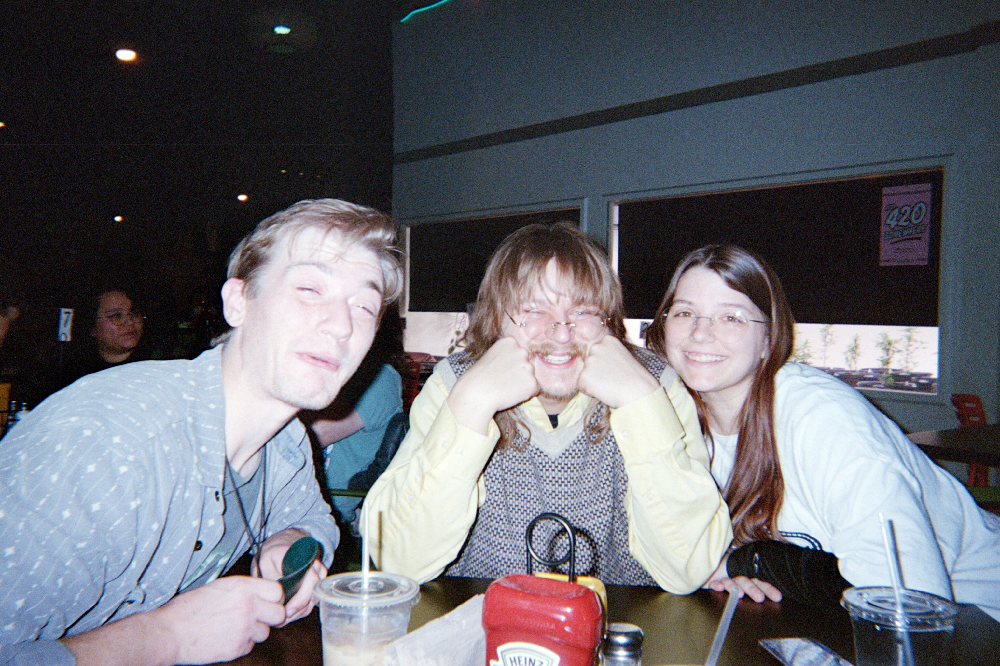

The Greatest Band in the World!!!!!!!

Please show yourself around!

Monke Finger is a garage rock indie band from Murfreesboro, TN. They are a 3 piece consisting of Aaron Stephens, Jill Rochet, and Kamon Rochet. Monke Finger is self-taught and can and will play any instrument they can get their hands on! They often switch instruments during shows and recordings. Influenced heavily by 60s songwriting and sound, combined with the DIY attitude of the 90s, Monke Finger is a well-rounded supergroup that will rock your socks off! They record at BananaRevolverStudios, housed in the home of Aaron Stephens, and self-produce and master most of their music.
Aaron is a rockin', croc-in' blonde man with fingers of steel. He can play the guitar like no other. This crazy monkey man can play any instrument you hand him with ease, often playing drums for the band as well. Without his ear and genuine creativity, Monke Finger would not be the crazy rockin' band they are today. (He is married, sorry ladies) (Also he loves his wife very much.)
Jill, the level headed monkey, holds the fort down in and outside of the studio. She slaps that bass like a wet hotdog slaps the grill in the heat of summer. No one messes with her cluckin', pluckin' fingers. Not even Kamon. Jill is the glue that holds Monke Finger together and keeps us grounded! #WeLoveYouJill
Kamon is the silliest monkey. He is also our mixin' machine, twisting all those knobs with style. This monkey plays the guitar, the bass on occasion, and the absolute shit out of the drums. He is happily married to the wonderous Jill Rochet <3
His name is Sploot.
We make music for people who have ears. If you don't have ears, Monke Finger may not be right for you. (Sorry Pumpkin Toadlets!)
Our sick sounds of garage rock and other hippy dippy shit will suck your socks right off your toes!
Listen to us on spotify! Listen to us on Apple Music!Buy our shit
Doors at 6 | FREE
Doors at 2 | FREE
Email: monkefinger@gmail.com
Instagram: @monke_finger